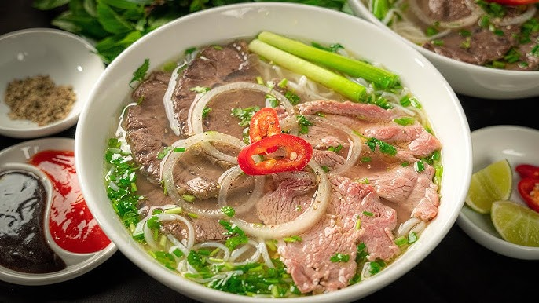
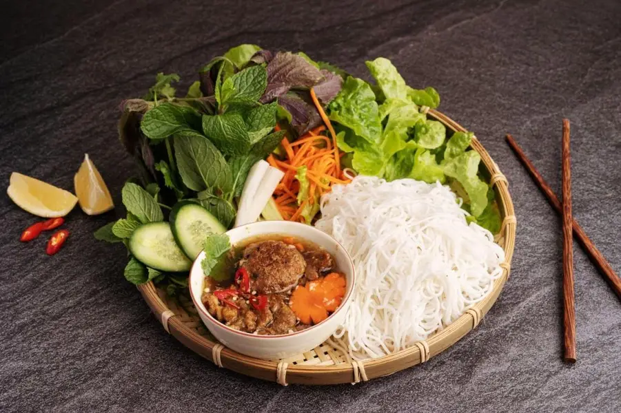
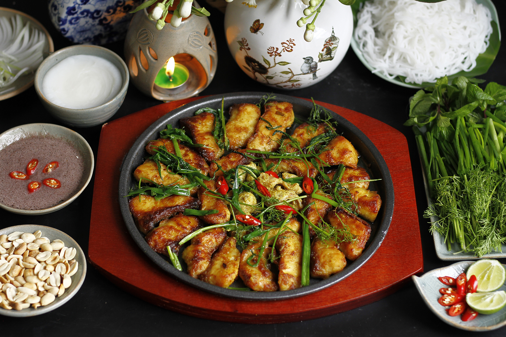
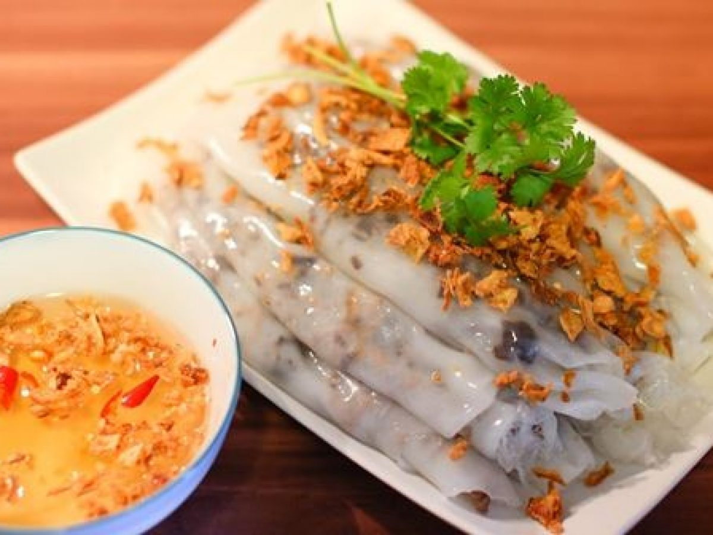
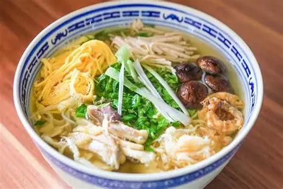

Northern Vietnamese cuisine favors subtle, well-balanced flavors — a gentle harmony of salty, sour, and umami, with light seasoning that lets the freshness of each ingredient shine through.
Popular dishes

PhởBeef/Chicken Noodle SoupA comforting bowl of simmered beef or chicken broth, rice noodles, and fresh herbs — Vietnam's most iconic dish.

Bún chảGrilled Pork with VermicelliCharcoal-grilled pork served with vermicelli noodles, fresh herbs, and a tangy dipping sauce.

Chả cá lã vọngLã Vọng Turmeric Fish with DillTurmeric-marinated fish grilled at the table with dill and green onions, a Hanoi specialty since 1871.

Bánh cuốnSteamed Rice RollsDelicate steamed rice rolls filled with minced pork and mushrooms, topped with crispy shallots.

Bún thangHanoi Mixed Noodle SoupA refined noodle soup layered with shredded chicken, egg, and pork floss in a clear, fragrant broth.